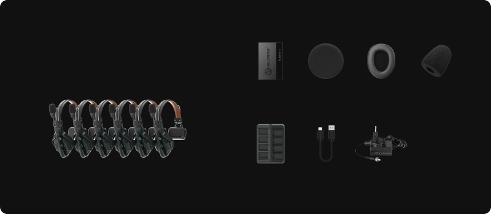

誰と話す？
カメラ、スイッチャー、進行など、連絡が必要な担当と人数を共有。
現場を動かす・支える ↗EQUIPMENT / 53
スタッフ連絡・ワイヤレスインカム
カメラ側と操作席で、声をかけ合う。
KEY SPECIFICATIONS

画像を大きく見る ＋01 / ROLE & FLOW
02 / BEFORE YOUR BRIEF
カメラ、スイッチャー、進行など、連絡が必要な担当と人数を共有。
操作席から各担当の移動範囲、壁や階の違い、使用会場を確認。
リハーサルを含めた使用時間、予備電池、充電場所と交換手順を整理。
03 / CHOOSING THE RIGHT TOOL
カメラ担当と映像操作席など、離れたスタッフが両手を空けて進行を合わせたいときに。来場者へ音を届けるPAとは別に、スタッフ同士の連絡用として検討します。
350mは見通し条件のメーカー値です。壁や遮蔽物のある会場では届く距離が短くなります。日本向け周波数仕様と実機の適合表示を確認し、会場で通話テストを行います。A/Bのグループ分けや他システムとの接続は、6Sだけの機能ではなくハブなどの構成確認が必要です。
6Sはマスター1台とリモート5台の6人構成。基本通話にハブは不要です。メーカーの6S構成画像にはバッテリー12個、8スロット充電器、USBケーブル、電源アダプター、交換用パッド類が示されています。ハブ構成へ拡張する場合、マスターヘッドセットはそのまま使えないため台数を組み直します。
担当と人数、会場・移動範囲・遮蔽物、利用国と実機の適合、通話グループ、他設備との接続、リハーサルを含む使用時間、予備電池と充電場所をお聞かせください。本体・周辺機材・搬入出・設営・本番操作・撤去を分けて、必要な範囲を整理します。
04 / RELATED EQUIPMENT
スタッフどうしの連絡を受け持つインカムです。映像の操作とは別の系統で組みます。